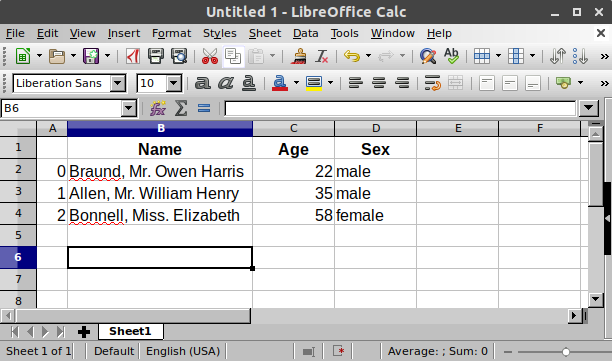

What kind of data does pandas handle?#
I want to start using pandas
In [1]: import pandas as pd
To load the pandas package and start working with it, import the package. The community agreed alias for pandas is
pd, so loading pandas aspdis assumed standard practice for all of the pandas documentation.
pandas data table representation#

I want to store passenger data of the Titanic. For a number of passengers, I know the name (characters), age (integers) and sex (male/female) data.
In [2]: df = pd.DataFrame( ...: { ...: "Name": [ ...: "Braund, Mr. Owen Harris", ...: "Allen, Mr. William Henry", ...: "Bonnell, Miss. Elizabeth", ...: ], ...: "Age": [22, 35, 58], ...: "Sex": ["male", "male", "female"], ...: } ...: ) ...: In [3]: df Out[3]: Name Age Sex 0 Braund, Mr. Owen Harris 22 male 1 Allen, Mr. William Henry 35 male 2 Bonnell, Miss. Elizabeth 58 female
To manually store data in a table, create a
DataFrame. When using a Python dictionary of lists, the dictionary keys will be used as column headers and the values in each list as columns of theDataFrame.
A DataFrame is a 2-dimensional data structure that can store data of
different types (including characters, integers, floating point values,
categorical data and more) in columns. It is similar to a spreadsheet, a
SQL table or the data.frame in R.
The table has 3 columns, each of them with a column label. The column labels are respectively
Name,AgeandSex.The column
Nameconsists of textual data with each value a string, the columnAgeare numbers and the columnSexis textual data.
In spreadsheet software, the table representation of our data would look very similar:
Each column in a DataFrame is a Series#

I’m just interested in working with the data in the column
AgeIn [4]: df["Age"] Out[4]: 0 22 1 35 2 58 Name: Age, dtype: int64
When selecting a single column of a pandas
DataFrame, the result is a pandasSeries. To select the column, use the column label in between square brackets[].
Note
If you are familiar with Python dictionaries, the selection of a single column is very similar to the selection of dictionary values based on the key.
You can create a Series from scratch as well:
In [5]: ages = pd.Series([22, 35, 58], name="Age")
In [6]: ages
Out[6]:
0 22
1 35
2 58
Name: Age, dtype: int64
A pandas Series has no column labels, as it is just a single column
of a DataFrame. A Series does have row labels.
Do something with a DataFrame or Series#
I want to know the maximum Age of the passengers
We can do this on the
DataFrameby selecting theAgecolumn and applyingmax():In [7]: df["Age"].max() Out[7]: 58
Or to the
Series:In [8]: ages.max() Out[8]: 58
As illustrated by the max() method, you can do things with a
DataFrame or Series. pandas provides a lot of functionalities,
each of them a method you can apply to a DataFrame or Series.
As methods are functions, do not forget to use parentheses ().
I’m interested in some basic statistics of the numerical data of my data table
In [9]: df.describe() Out[9]: Age count 3.000000 mean 38.333333 std 18.230012 min 22.000000 25% 28.500000 50% 35.000000 75% 46.500000 max 58.000000
The
describe()method provides a quick overview of the numerical data in aDataFrame. As theNameandSexcolumns are textual data, these are by default not taken into account by thedescribe()method.
Many pandas operations return a DataFrame or a Series. The
describe() method is an example of a pandas operation returning a
pandas Series or a pandas DataFrame.
Check more options on describe in the user guide section about aggregations with describe
Note
This is just a starting point. Similar to spreadsheet software, pandas represents data as a table with columns and rows. Apart from the representation, also the data manipulations and calculations you would do in spreadsheet software are supported by pandas. Continue reading the next tutorials to get started!
REMEMBER
Import the package, aka
import pandas as pdA table of data is stored as a pandas
DataFrameEach column in a
DataFrameis aSeriesYou can do things by applying a method to a
DataFrameorSeries
A more extended explanation to DataFrame and Series is provided in the introduction to data structures.